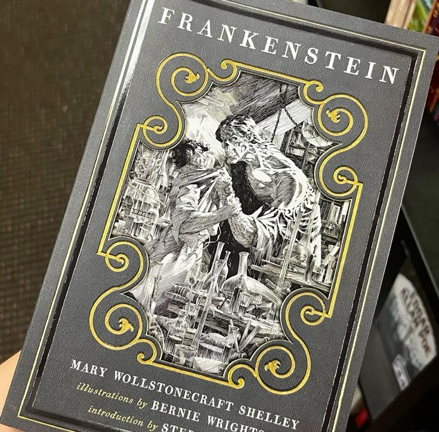
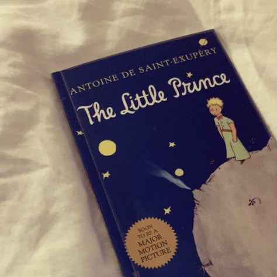
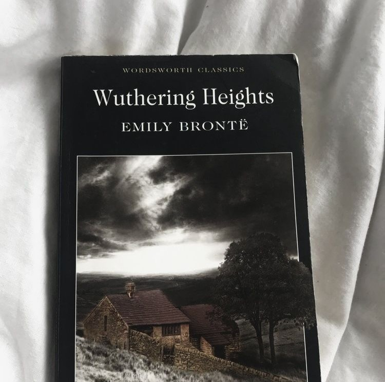

Nesta área você encontra alguns dos meus livros favoritos e que moldaram minha personalidade e gostos ao longo dos anos.
Aqui estão alguns dos livros que fazem parte da minha estante. Passe o mouse por cima de cada foto para descobrir um pouco mais sobre o objeto desejado.

Queria que a primeira vez que eu lesse “Frankenstein” de Mary Shelley fosse com a versão ilustrada de Bernie Wrightson. Fiz essa leitura em família e foi gratificante.

“O Pequeno Príncipe” foi uma leitura que fiz no fim da infância. Durante muitos anos foi um livro muito importante para mim e até hoje mantenho uma coleção com várias edições.

Li “O Morro dos Ventos Uivantes” durante as férias de meio de ano de 2025 e este livro mudou a minha vida. Se tornou minha obra favorita desde então.